Switches
- Switch types
- Switch configurations
- Training system component: the indicator light
What is a Switch?
Switches are basic components of electrical circuits. Their main use is to prevent or allow the flow of electrical current at a particular point in a circuit.
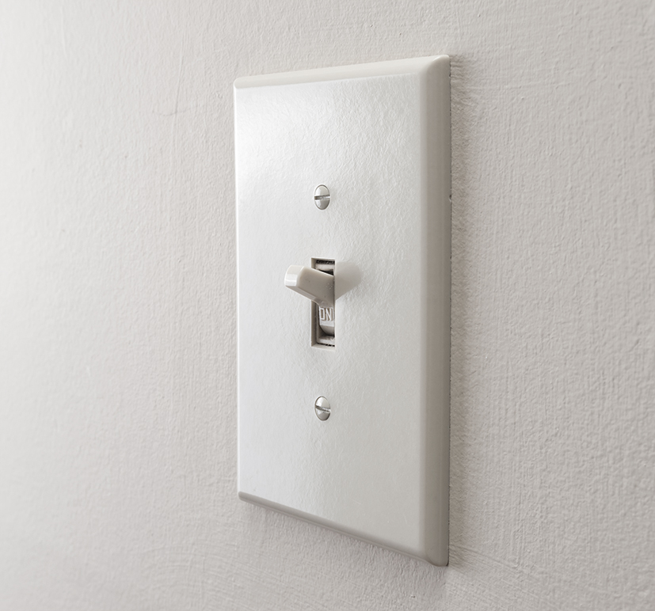
Toggle Switch
Operated manually using a lever or handle. Allows selection between two states determined by the lever position. The most common example is the residential light switch.
| Component | Symbol |
|---|---|
| Toggle switch | 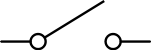 |
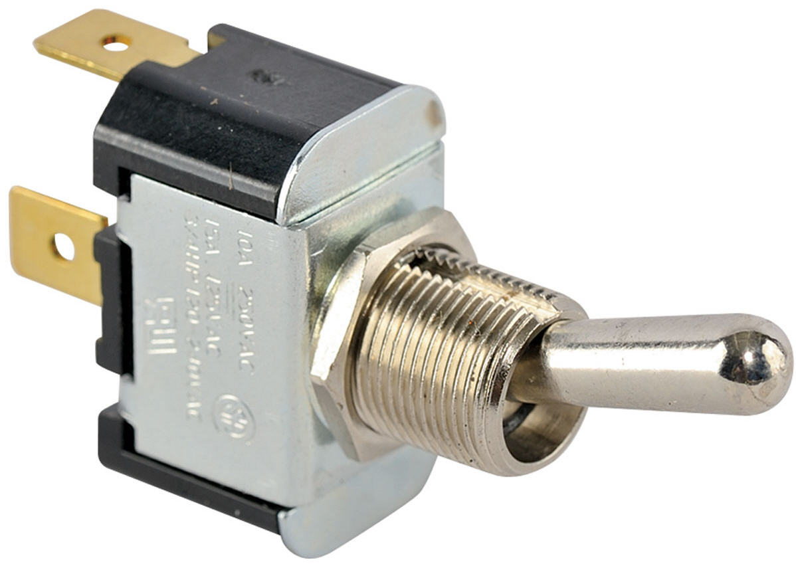
Knife Switch
Consists of a hinged metal lever that can be inserted into a slot (allowing contact) or removed from the slot (preventing contact).
| Component | Symbol |
|---|---|
| Knife switch | 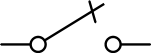 |
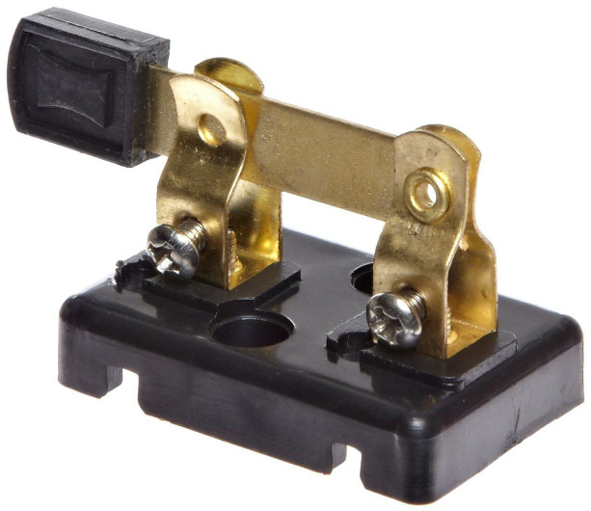
Normally Open Push-button Switch
Operated by a push button. When the button is released, the switch is open. When the button is pressed, the switch closes.
| State | Symbol |
|---|---|
| Open (button released) | 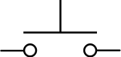 |
| Closed (button pressed) | 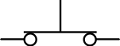 |
Normally Closed Push-button Switch
When the button is released, the switch is closed. When the button is pressed, the switch opens.
| State | Symbol |
|---|---|
| Closed (button released) | 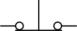 |
| Open (button pressed) | 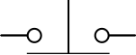 |
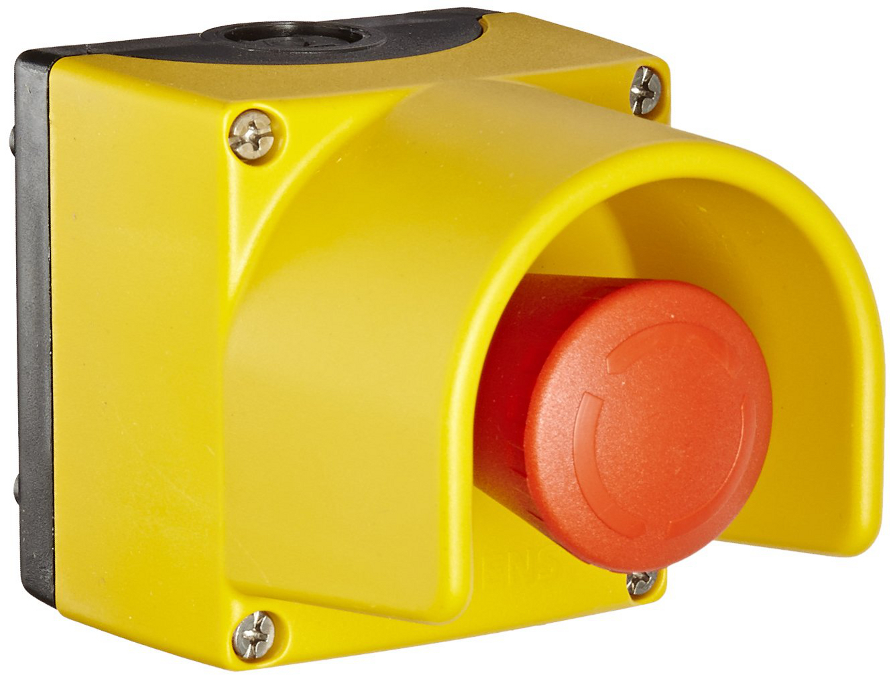
Selector Switch
Manually operated using a rotating knob. Allows selection between two or more positions, each making contact at a different branch in the circuit.
| Component | Symbol |
|---|---|
| Selector switch | 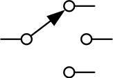 |
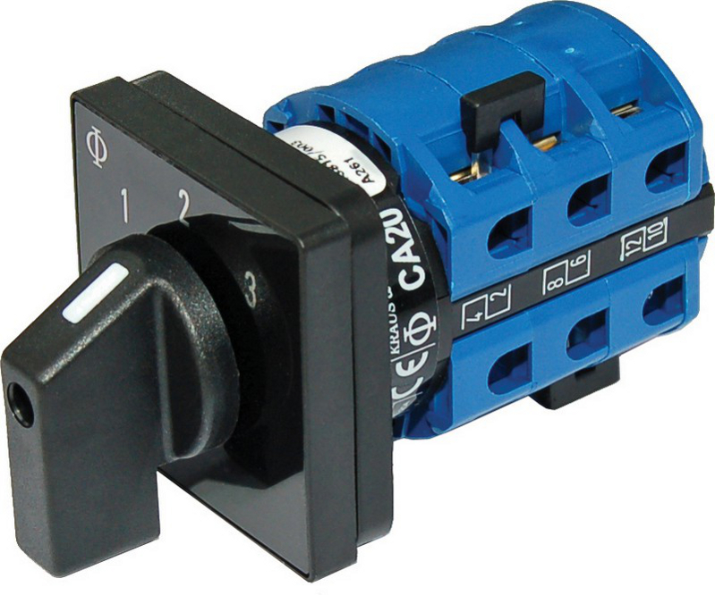
Poles and Throws
In addition to switch type, switches are also classified by their configuration, defined by the number of poles and throws.
Single-Pole Single-Throw (SPST)
The simplest switch configuration. Controls one circuit and can make contact with one circuit path.
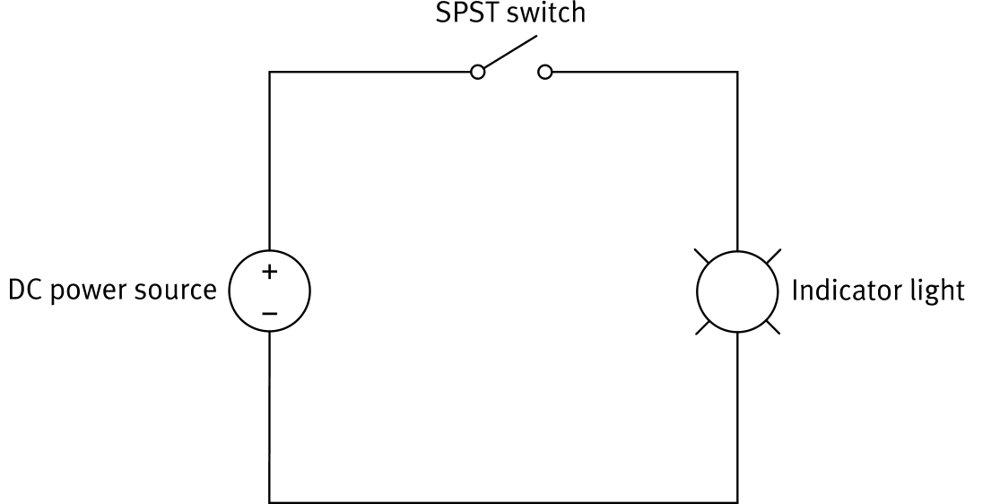
Double-Pole Single-Throw (DPST)
Operates as two SPST switches actuated by the same mechanism. Controls two circuits simultaneously with a single throw.
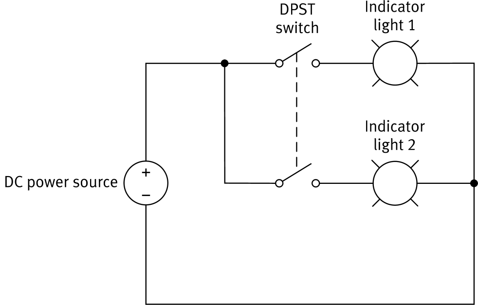
Single-Pole Double-Throw (SPDT)
Controls one circuit but can connect to two different circuit paths. The switch selects which of the two branches receives current.
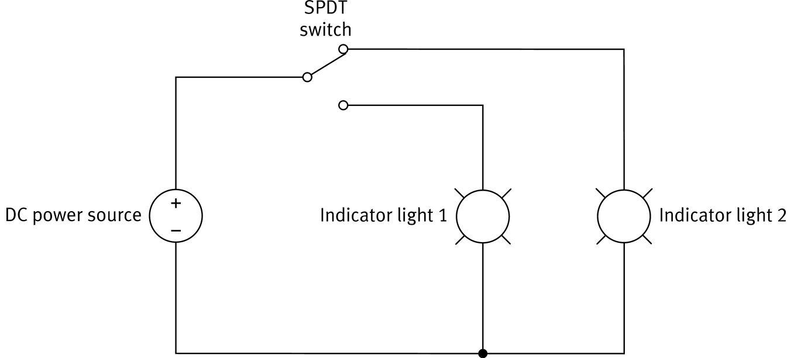
Double-Pole Double-Throw (DPDT)
Operates as two SPDT switches actuated together. Controls two circuits and selects between two paths in each.
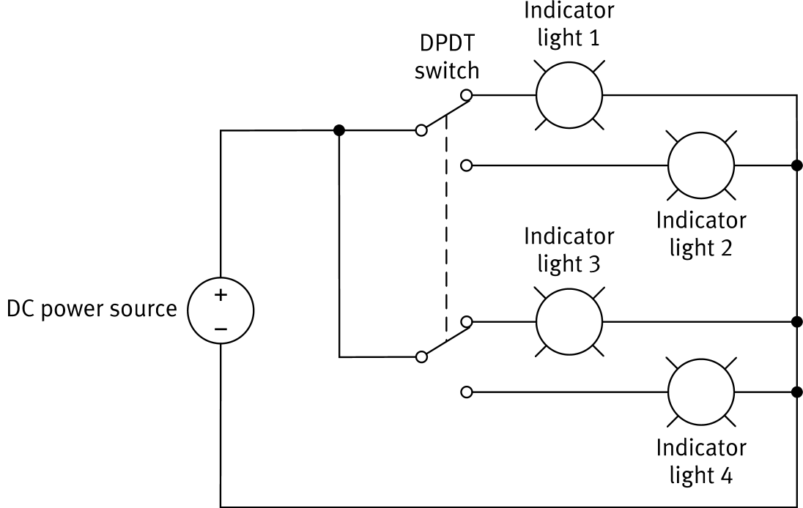
The Indicator Light
A basic circuit component consisting of a lamp, designed to produce light from electricity.
| Component | Symbol |
|---|---|
| Indicator light | 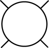 |

Switches: Types & Configurations
Switch Types
Switch Configurations